Twój czas, Twoje miejsce
Nowoczesne domy nad jeziorem na Mazurach.
Miejsce, do którego chce się wracać. Zachody słońca, zapach lasu, poranna kawa z widokiem na wodę i cisza, która koi.
Krzywe Lake Houses
Stworzone z myślą o prawdziwym wypoczynku.
Z dala od zgiełku, blisko tego, co ważne. Nasze domy to połączenie nowoczesnej architektury, mazurskiego krajobrazu i gościnności.
Dowiedz się więcej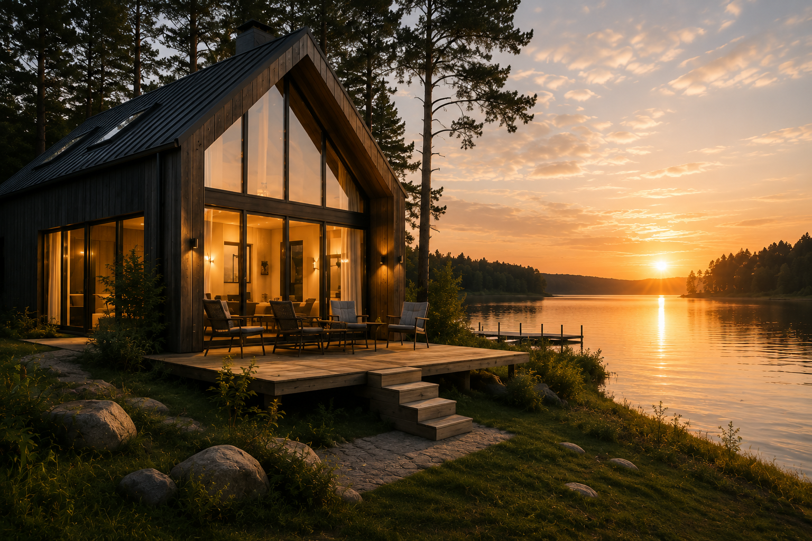
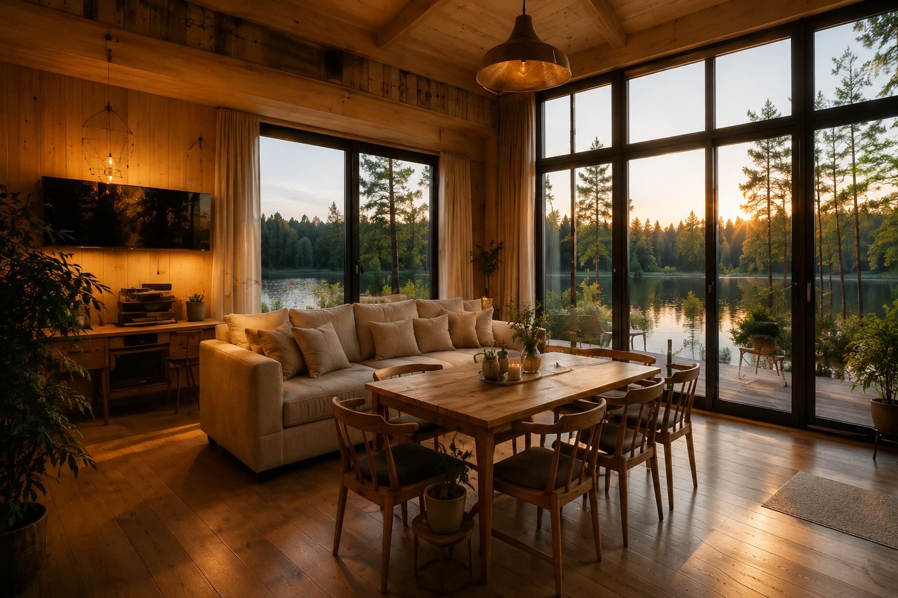
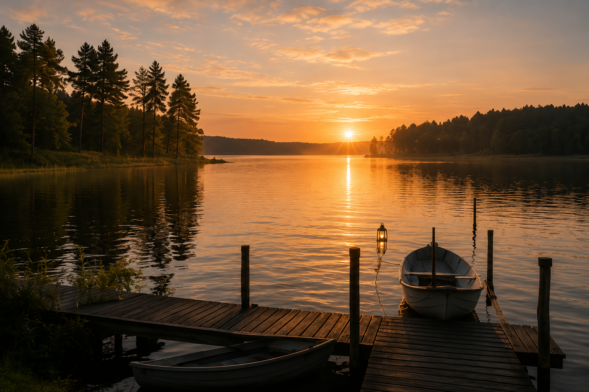
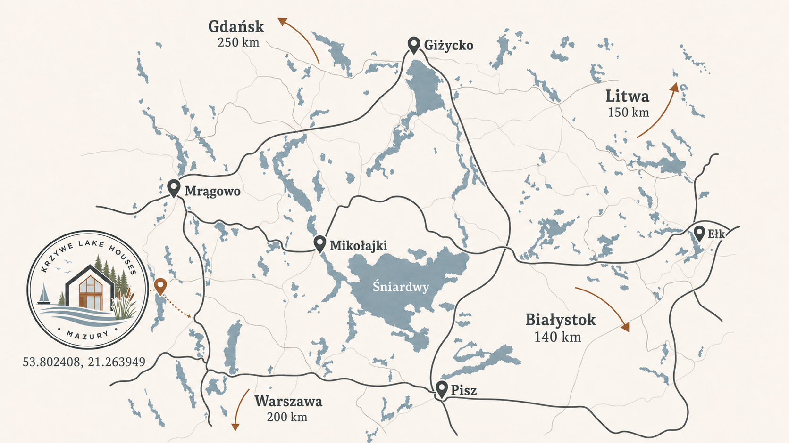
Wyjątkowa lokalizacja
W sercu Mazur
Krzywe Lake Houses znajdują się w Krzywym, nad Jeziorem Krzywe, z wygodnym dojazdem od strony Mikołajek, Mrągowa i Piecek.
Mikołajki
30 min
Mrągowo
20 min
Piecki
10 min
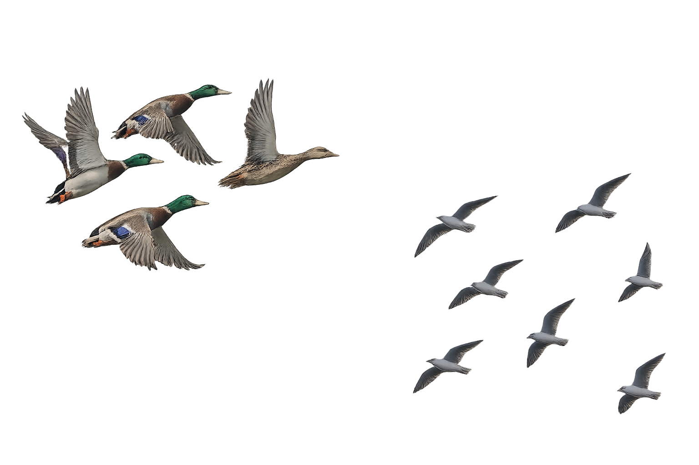
Pobyt nad samą wodą
Dwa domy stworzone z miłości do Mazur.
Krzywe Lake Houses powstały z prostego marzenia: zbudować nad Jeziorem Krzywe miejsce, do którego chce się wracać nie tylko latem. Miejsce dla ludzi, którzy kochają Mazury za ciszę po zachodzie słońca, zapach jeziora po deszczu, rozmowy przy ogniu i poranki, w których pierwszym widokiem jest woda.
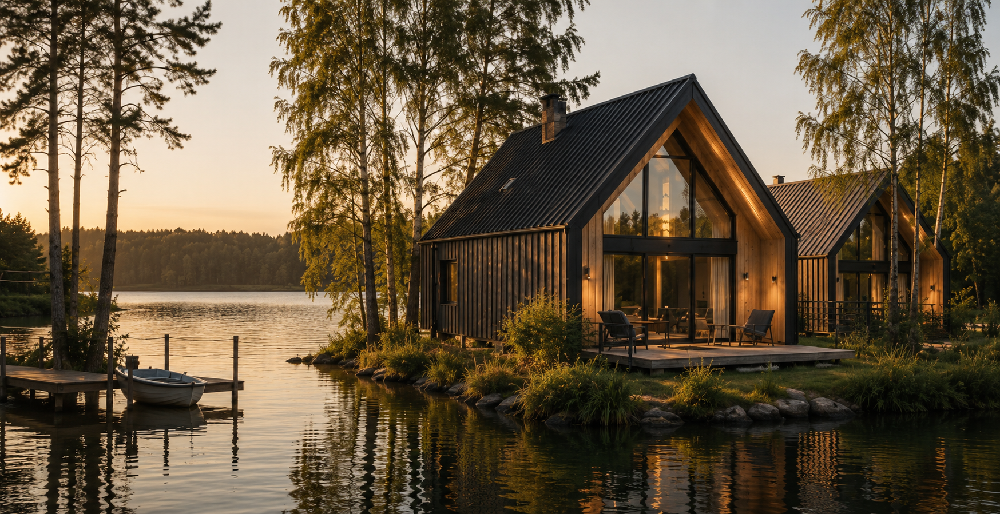
Dwa domy
Jeden wyjątkowy cel
To dwa domy na wynajem na Mazurach w stylu nowoczesnej stodoły. Każdy dom mieści do 10 osób, ma 4 sypialnie, salon z aneksem kuchennym, taras oraz bezpośredni dostęp do prywatnej linii brzegowej.
Do 10 osób
w każdym domu 4 komfortowe
sypialnie Taras z widokiem
na jezioro Prywatna linia
brzegowa
w każdym domu 4 komfortowe
sypialnie Taras z widokiem
na jezioro Prywatna linia
brzegowa
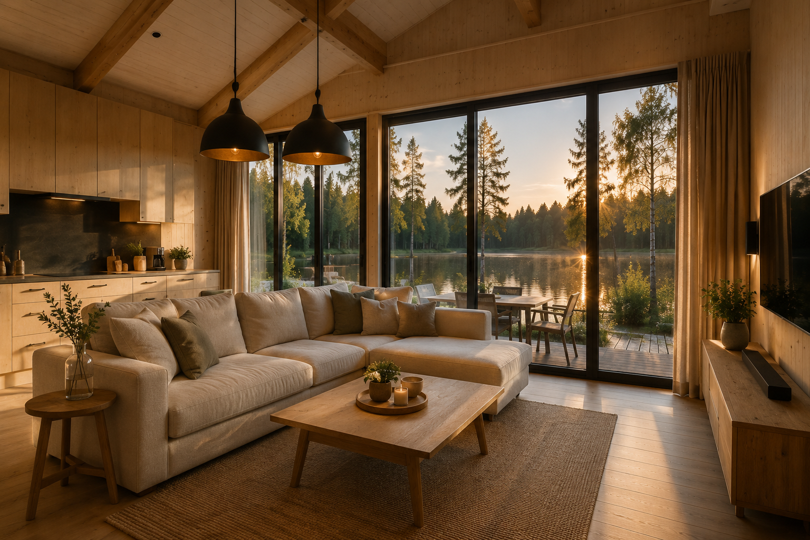
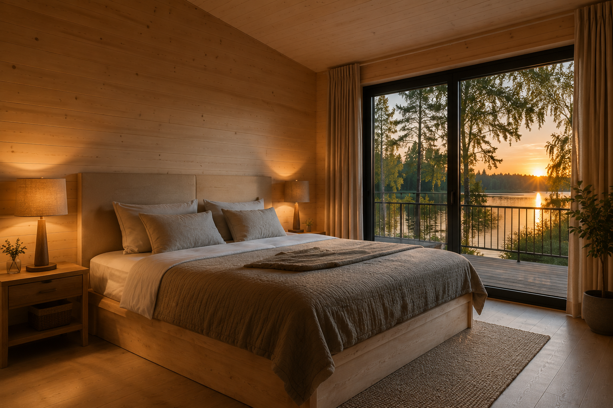
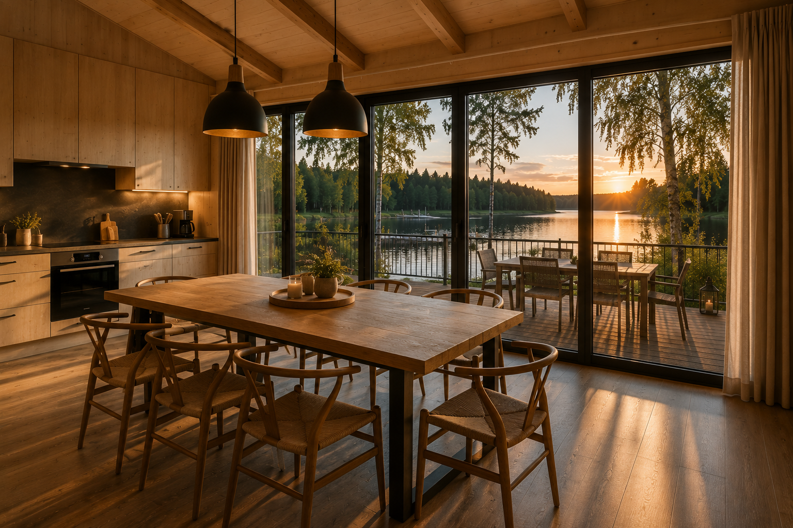
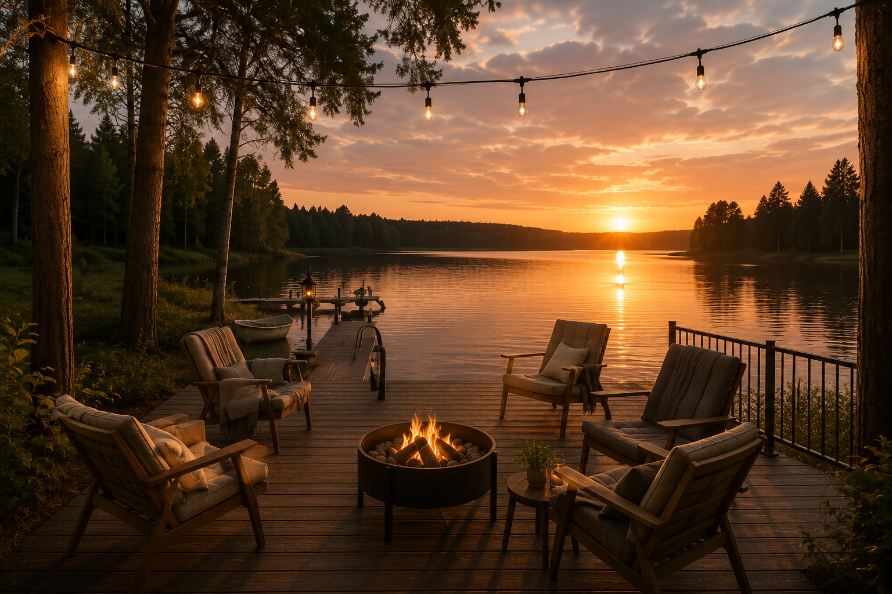
Co sprawia, że pobyt u nas jest wyjątkowy?
Bliskość natury
na wyciągnięcie ręki Spokój i prywatność
z dala od zgiełku Wysoki standard
i pełne wyposażenie Wieczory przy ogniu
i gwiazdach Miejsce, do którego
chce się wracać
na wyciągnięcie ręki Spokój i prywatność
z dala od zgiełku Wysoki standard
i pełne wyposażenie Wieczory przy ogniu
i gwiazdach Miejsce, do którego
chce się wracać
Twój czas, Twoje miejsce
Odpoczynek na Twoich zasadach
Do dyspozycji gości jest prywatny pomost i palenisko, czyli wszystko, co sprawia, że pobyt nad jeziorem staje się prawdziwym odpoczynkiem, a nie tylko noclegiem.
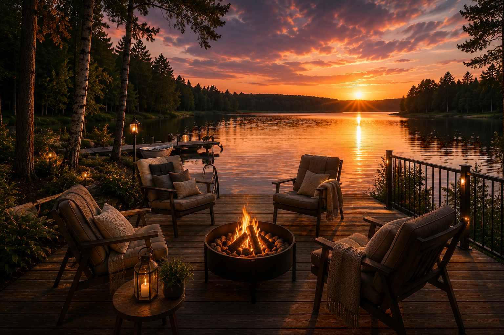
Krzywe Lake Houses – Twój adres na Mazurach.
Rytm pobytu
Od kawy przy wodzie po spokojny wieczór.
Każdy dzień w Krzywe Lake Houses płynie w swoim rytmie. Blisko natury, z dala od pośpiechu.
Rano
Zacznij dzień na spokojnie
Kawa z widokiem na jezioro, świeże powietrze i cisza, która naprawdę budzi.
Kawa z widokiem
Taras nad wodą to idealne miejsce na poranną kawę.
Świeże powietrze
Otaczająca natura dodaje energii na cały dzień.
Chwila dla siebie
Zacznij dzień oddechem, ciszą i spokojem.
W dzień
Czas na wodę i przygody
Mazury oferują mnóstwo możliwości - od relaksu po aktywne odkrywanie okolicy.
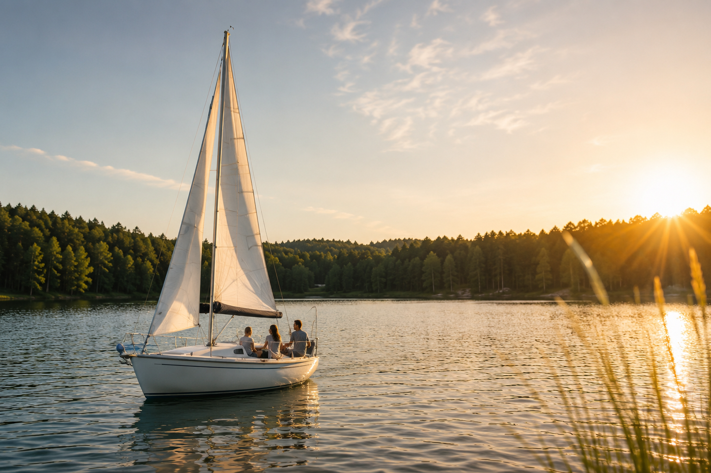
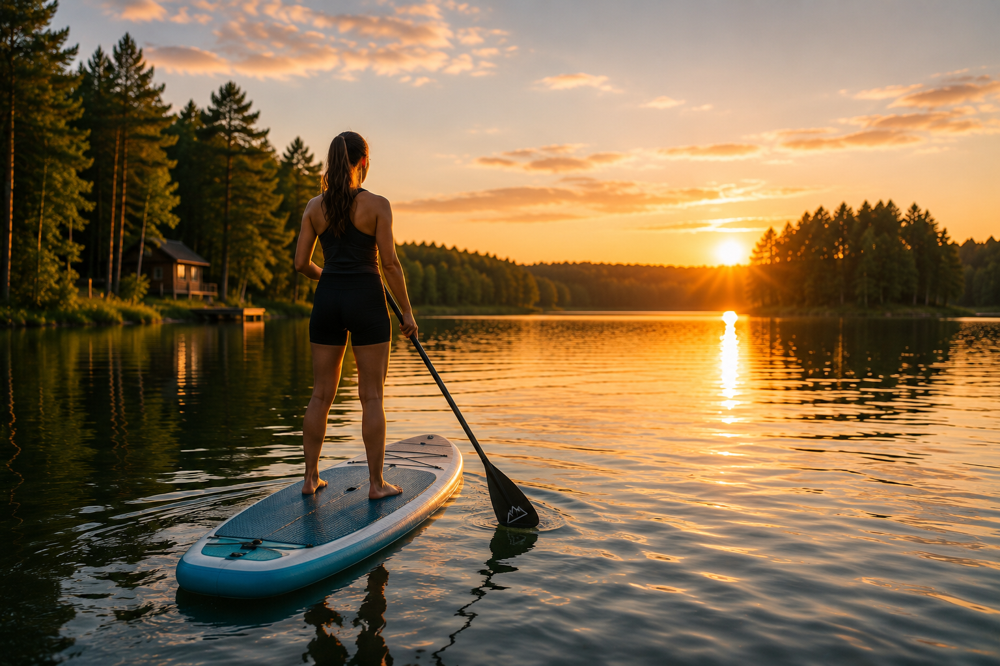
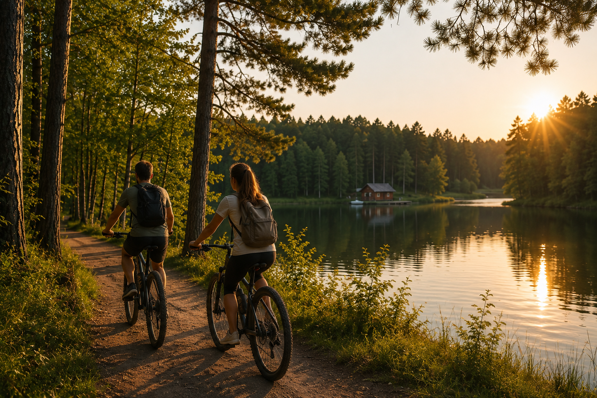
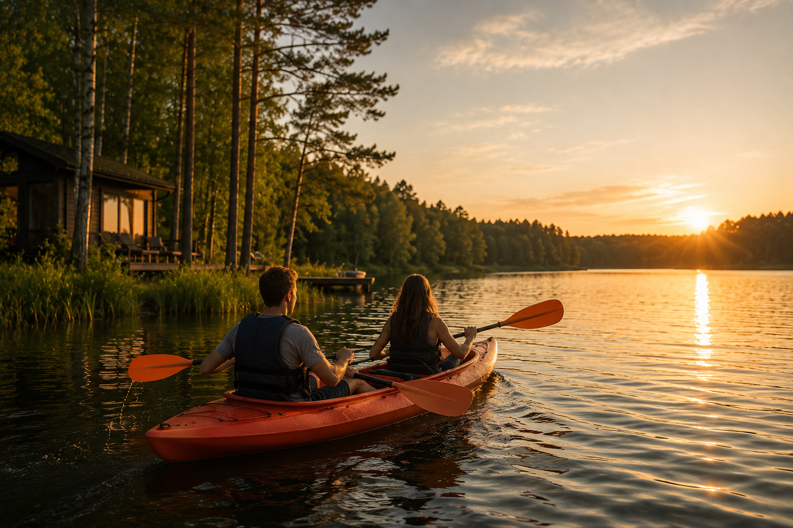
Co możesz robić?
Pływanie i sporty wodne
Wędkowanie
Rejsy i wynajem łodzi
Zwiedzanie okolicy
Trasy rowerowe i piesze
Atrakcje dla rodzin
Zobacz atrakcje w okolicy
Wieczorem
Zwolnij i odpocznij
Zachód słońca, miękkie światło i wieczory bez miejskiego zgiełku.
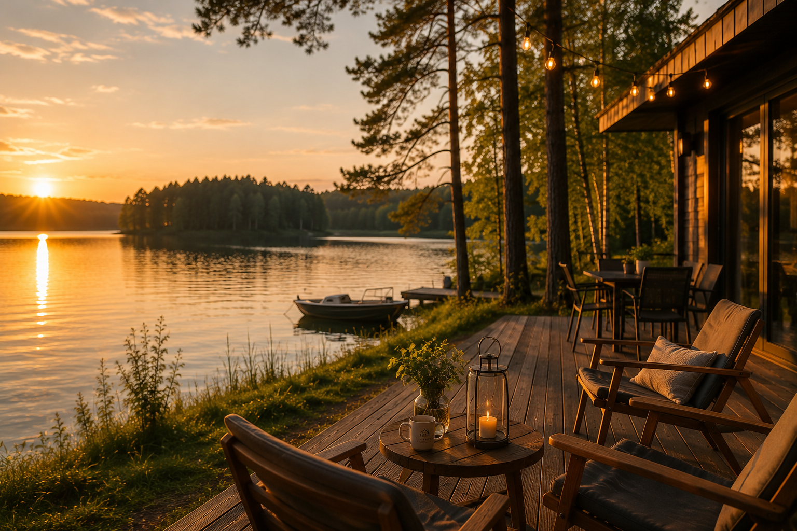
Zachody słońca
Niezapomniane widoki każdego wieczoru.
Wieczory przy świetle
Lampiony, świece i rozmowy do późna.
Sen wśród natury
Spokojny sen w otoczeniu szumu drzew i wody.
Dlaczego ten rytm działa?
Bliskość natury na wyciągnięcie ręki
Prywatność i komfort
Idealne miejsce na reset
Atrakcje przez cały rok
Niezapomniane wspomnienia
Zatrzymaj się. Odzyskaj rytm. Poczuj Mazury.
Dla Ciebie i Twoich bliskich
Dom na Mazurach dla wspólnego czasu.
To dobry wybór na rodzinny wyjazd, spokojny weekend ze znajomymi, dłuższy pobyt wakacyjny albo pracę zdalną w miejscu, które pozwala naprawdę odpocząć po zamknięciu laptopa.

Wspólny czas
Przestrzeń, która sprzyja rozmowom, śmiechowi i bliskości.
Blisko natury
Jezioro, las i cisza, które naprawdę robią różnicę.
Poczuj się jak u siebie
Komfort, wygoda i wszystko, czego potrzebujesz do udanego pobytu.
Rodziny
Wspólna przestrzeń, bliskość natury i spokojne tempo dnia.
- Bezpieczna okolica
- Place zabaw i atrakcje dla dzieci
- Domy z udogodnieniami dla rodzin
- Bliskość jeziora
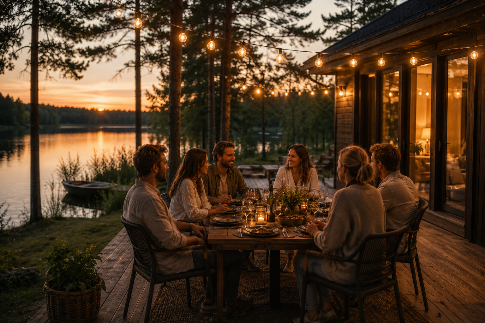
Grupy
Pobyt do 10 osób, wygodne domy i dużo miejsca na bycie razem.
- Przestronne domy i tarasy
- Miejsce na wspólne posiłki i wieczory
- Atrakcje w okolicy dla każdego
- Parking na terenie obiektu
Praca i reset
Idealne warunki do pracy zdalnej i pełnego naładowania baterii.
- Szybki internet
- Cisza i spokój do pracy
- Widok, który inspiruje
- Odpoczynek po godzinach
Dlaczego warto wybrać Krzywe Lake Houses?
Bezpośrednia bliskość jeziora
Kameralna, zielona okolica
Prywatność i bezpieczeństwo
Wygoda i wysokie standardy
Świetna lokalizacja na Mazurach
Zatrzymaj się. Odzyskaj rytm. Poczuj Mazury.
Zarezerwuj swój pobytDomy i galeria
Nowoczesna stodoła dla 10 osób.
Tu pokażemy układ domu, pokoje, taras, strefę dzienną, zdjęcia wnętrz i kadry z otoczenia.

Jezioro Krzywe · Mazury prywatnie
Tu zaczyna się cisza.
Kilka minut po zjeździe z mrągowskiej drogi zostają tylko woda, trzciny i szeroki horyzont. Krzywe jest jeziorem, przy którym dzień zwalnia naturalnie: od pierwszej kawy na tarasie po wieczorne światło gasnące nad taflą.
gmina Mrągowo
ok. 150 ha
do 22,5 m
Najważniejsze o akwenie
Nie tylko widok z tarasu, ale prawdziwy krajobraz Mazur.
Krzywe jest kameralnym jeziorem rynnowym położonym przy miejscowościach Dłużec, Krzywe i Krzywy Róg. Brzegi są naturalne i zmienne: miejscami otwarte, miejscami trzcinowe, z trzema niewielkimi wyspami oraz łagodnym przejściem w pola i lasy. To krajobraz, który nie potrzebuje wielu słów: szeroka tafla, ptaki nad trzcinami i przestrzeń, która od pierwszego dnia obniża tempo.
Dużo przestrzeni na widok i oddech, ale nadal kameralny, mazurski charakter.
Średnia głębokość to ok. 5 m, a najgłębsze partie schodzą do 22,5 m.
Długa, nieregularna linia brzegu daje zatoki, cyple i dużo naturalnych kadrów.
Charakterystyczny, wydłużony układ akwenów rynnowych buduje poczucie głębi i kameralności.
Naturalna woda, trzcinowe brzegi i spokojne zatoki budują klimat miejsca.
Charakter jeziora
Urozmaicona linia brzegu, trzciny i cisza między polami.
Jezioro Krzywe nie jest miejskim kąpieliskiem z głośnym deptakiem. To bardziej naturalny akwen z zatokami, trzcinowiskami, mulistym i zmiennym dnem oraz spokojnym ruchem wody. Przy takiej scenerii najlepiej działają proste rzeczy: drewno pod stopami, otwarte okna, zapach jeziora po deszczu i wieczór, który można spędzić bez pośpiechu.
Rybostan
Dobre miejsce dla spokojnego wędkarstwa.
W wodach jeziora wymieniane są szczupaki, karasie, leszcze, węgorze i miętusy. To dobry kierunek dla osób, które lubią spokojne łowienie o świcie, bez miejskiego zgiełku i pośpiechu.
Ptaki i roślinność
Trzciny, wyspy i naturalne siedliska.
Wokół jeziora można spotkać ptaki związane z mokradłami i otwartą wodą: czaplę siwą, żurawia, kormorana czy jastrzębia. Przy brzegach pierwsze skrzypce grają pasy trzcin, zatoki i ciche przejścia między wodą, łąką i lasem.
- trzy niewielkie wyspy
- zatoki i półwyspy
- średnio zarośnięte brzegi
Wędkowanie
Łowisko z konkretnymi zasadami sezonowymi.
Sezon wędkarski ma tu swój wyraźny rytm: z brzegu od wiosny do późnej jesieni, z łodzi od początku czerwca, a zimą także pod lodem. Aktualne zasady i opłaty najlepiej sprawdzić przed wyjazdem u zarządcy łowiska.
- właściciel łowiska: Gospodarstwo Rybackie sp. z o.o. w Mrągowie
- połów nocny nie jest przewidziany w regulaminie łowiska
Dla gości
To jezioro jest osią całego pobytu.
Pobyt nad Krzywym układa się sam: rano kawa z widokiem na wodę, w dzień odpoczynek między tarasem a brzegiem, wieczorem cisza i światło odbijające się w tafli. To jest ten rodzaj Mazur, do którego wraca się w myślach długo po wyjeździe.
cisza
widok
natura


Położenie
Krzywe, Dłużec i Krzywy Róg przy jednym akwenie.
Akwen leży w gminie Mrągowo i od zachodu sąsiaduje z gminą Piecki. Dojazd z Mrągowa prowadzi lokalnymi drogami przez mazurskie pola i lasy, co od razu ustawia spokojniejszy rytm podróży.

Atrakcje w okolicy
Mazury blisko domu.
Miejsce na trasy spacerowe, żagle, rowery, restauracje, lokalne atrakcje i propozycje wyjazdów na każdą pogodę.
Oferta
Terminy, pakiety i zasady pobytu.
Zakładka pod cennik, dostępność, pakiety sezonowe, warunki rezerwacji i najważniejsze informacje przed przyjazdem.
Kontakt
Zapytaj o pobyt nad Jeziorem Krzywe.
Zakładka na formularz, telefon, Instagram, e-mail i krótką ścieżkę rezerwacji.